ESMF Application Wrapper for Coupled Flow Demo. This file contains the main program, and creates a top level ESMF Gridded Component to contain all other Components.
The variables are:
The first call to ESMF must be the initialize method. As part of initialization the default Calendar can be specified, some options for logging can be set, and the default global VM can be returned. Here we are setting the default Calendar to be Gregorian, and getting back the global VM:
! Initialize ESMF, get the default Global VM, and set
! the default calendar to be Gregorian.
call ESMF_Initialize(vm=vm, defaultCalendar=ESMF_CAL_GREGORIAN, rc=rc)
if(rc /= ESMF_SUCCESS) call ESMF_Finalize(terminationflag=ESMF_ABORT, rc=rc)
! Create the top level Gridded Component.
compGridded = ESMF_GridCompCreate(name="Coupled Flow Demo", rc=rc)
if(rc /= ESMF_SUCCESS) call ESMF_Finalize(terminationflag=ESMF_ABORT, rc=rc)
The following piece of code provides an example of Clock creation used in the Demo. Note that the Gregorian calendar was set as the default in the ESMF_Initialize() call above. As shown in this example, we first initialize a time interval (timestep) to 2 seconds:
call ESMF_TimeIntervalSet(timeStep, s=2, rc=rc)
if(rc /= ESMF_SUCCESS) call ESMF_Finalize(terminationflag=ESMF_ABORT, rc=rc)
!And then we set the start time and stop time to input values for the month,
!day, and hour (assuming the year to be 2003):
call ESMF_TimeSet(startTime, yy=2003, mm=s_month, dd=s_day, &
h=s_hour, m=s_min, s=0, rc=rc)
if(rc /= ESMF_SUCCESS) call ESMF_Finalize(terminationflag=ESMF_ABORT, rc=rc)
call ESMF_TimeSet(stopTime, yy=2003, mm=e_month, dd=e_day, &
h=e_hour, m=e_min, s=0, rc=rc)
if(rc /= ESMF_SUCCESS) call ESMF_Finalize(terminationflag=ESMF_ABORT, rc=rc)
!With the time interval, start time, and stop time set above, the Clock can
!now be created:
clock = ESMF_ClockCreate(timeStep=timeStep, startTime=startTime, &
stopTime=stopTime, rc=rc)
if(rc /= ESMF_SUCCESS) call ESMF_Finalize(terminationflag=ESMF_ABORT, rc=rc)
!Subsequent calls to ESMF\_ClockAdvance with this clock will increment the
!current time from the start time by the timestep.
The following piece of code provides an example of Grid creation used in the Demo. The extents of the Grid were previously read in from an input file, but the rest of the Grid parameters are set here by default. The Grid spans the Application's PET list, while the type of the Grid is assumed to be horizontal and Cartesian x-y with an Arakawa C staggering. The Grid name is set to "source grid":
counts(1) = i_max
counts(2) = j_max
g_min(1) = x_min
g_min(2) = y_min
g_max(1) = x_max
g_max(2) = y_max
grid = ESMF_GridCreateShapeTile(maxIndex=counts, &
coordDep1=(/1/), &
coordDep2=(/2/), &
gridEdgeLWidth=(/0,0/), &
name="source grid", rc=rc)
if(rc /= ESMF_SUCCESS) call ESMF_Finalize(terminationflag=ESMF_ABORT, rc=rc)
! u
call ESMF_GridAddCoord(grid, staggerLoc=ESMF_STAGGERLOC_EDGE1, rc=rc)
if(rc /= ESMF_SUCCESS) call ESMF_Finalize(terminationflag=ESMF_ABORT, rc=rc)
! v
call ESMF_GridAddCoord(grid, staggerLoc=ESMF_STAGGERLOC_EDGE2, rc=rc)
if(rc /= ESMF_SUCCESS) call ESMF_Finalize(terminationflag=ESMF_ABORT, rc=rc)
! sie, p, q, rho, flag
call ESMF_GridAddCoord(grid, staggerLoc=ESMF_STAGGERLOC_CENTER, rc=rc)
if(rc /= ESMF_SUCCESS) call ESMF_Finalize(terminationflag=ESMF_ABORT, rc=rc)
! Get pointer reference to internal coordinate array
! Compute center stagger coordinate values
call ESMF_GridGetCoord(grid, localDE=0, &
staggerLoc=ESMF_STAGGERLOC_CENTER, &
coordDim=1, fptr=CoordX, rc=rc)
if(rc /= ESMF_SUCCESS) call ESMF_Finalize(terminationflag=ESMF_ABORT, rc=rc)
call ESMF_GridGetCoord(grid, localDE=0, &
staggerLoc=ESMF_STAGGERLOC_CENTER, &
coordDim=2, fptr=CoordY, rc=rc)
if(rc /= ESMF_SUCCESS) call ESMF_Finalize(terminationflag=ESMF_ABORT, rc=rc)
dx = (x_max-x_min)/i_max
dy = (y_max-y_min)/j_max
coordX(1) = x_min + dx/2
coordY(1) = y_min + dy/2
do i = 2, i_max
coordX(i) = coordX(i-1) + dx
enddo
do j = 2, j_max
coordY(j) = coordY(j-1) + dy
enddo
! Get pointer reference to internal coordinate for U
! Compute east stagger (U) coordinate values
call ESMF_GridGetCoord(grid, localDE=0, &
staggerLoc=ESMF_STAGGERLOC_EDGE1, &
coordDim=1, fptr=CoordX, rc=rc)
if(rc /= ESMF_SUCCESS) call ESMF_Finalize(terminationflag=ESMF_ABORT, rc=rc)
call ESMF_GridGetCoord(grid, localDE=0, &
staggerLoc=ESMF_STAGGERLOC_EDGE1, &
coordDim=2, fptr=CoordY, rc=rc)
if(rc /= ESMF_SUCCESS) call ESMF_Finalize(terminationflag=ESMF_ABORT, rc=rc)
dx = (x_max-x_min)/i_max
dy = (y_max-y_min)/j_max
coordX(1) = x_min + dx
coordY(1) = y_min + dy/2
do i = 2, i_max
coordX(i) = coordX(i-1) + dx
enddo
do j = 2, j_max
coordY(j) = coordY(j-1) + dy
enddo
! Get pointer reference to internal coordinate for V
! Compute north stagger (V) coordinate values
call ESMF_GridGetCoord(grid, localDE=0, &
staggerLoc=ESMF_STAGGERLOC_EDGE2, &
coordDim=1, fptr=CoordX, rc=rc)
if(rc /= ESMF_SUCCESS) call ESMF_Finalize(terminationflag=ESMF_ABORT, rc=rc)
call ESMF_GridGetCoord(grid, localDE=0, &
staggerLoc=ESMF_STAGGERLOC_EDGE2, &
coordDim=2, fptr=CoordY, rc=rc)
if(rc /= ESMF_SUCCESS) call ESMF_Finalize(terminationflag=ESMF_ABORT, rc=rc)
dx = (x_max-x_min)/i_max
dy = (y_max-y_min)/j_max
coordX(1) = x_min + dx/2
coordY(1) = y_min + dy
do i = 2, i_max
coordX(i) = coordX(i-1) + dx
enddo
do j = 2, j_max
coordY(j) = coordY(j-1) + dy
enddo
!The Grid can then be attached to the Gridded Component with a set call:
call ESMF_GridCompSet(compGridded, grid=grid, rc=rc)
if(rc /= ESMF_SUCCESS) call ESMF_Finalize(terminationflag=ESMF_ABORT, rc=rc)
Create and initialize a dummy State to use for both import and export.
flowstate = ESMF_StateCreate("Coupled Flow State", rc=rc)
if(rc /= ESMF_SUCCESS) call ESMF_Finalize(terminationflag=ESMF_ABORT, rc=rc)
Init, Run, and Finalize sections of the Coupled Flow Component:
call ESMF_GridCompInitialize(compGridded, flowstate, flowstate, &
clock, rc=rc, userRc=urc)
print *, "Coupled Flow Component Initialize finished, rc =", rc, urc
if(rc /= ESMF_SUCCESS) call ESMF_Finalize(terminationflag=ESMF_ABORT, rc=rc)
if(urc /= ESMF_SUCCESS) call ESMF_Finalize(terminationflag=ESMF_ABORT, rc=urc)
call ESMF_GridCompRun(compGridded, flowstate, flowstate, clock, rc=rc, userRc=urc)
print *, "Coupled Flow Component Run finished, rc =", rc, urc
if(rc /= ESMF_SUCCESS) call ESMF_Finalize(terminationflag=ESMF_ABORT, rc=rc)
if(urc /= ESMF_SUCCESS) call ESMF_Finalize(terminationflag=ESMF_ABORT, rc=urc)
call ESMF_GridCompFinalize(compGridded, flowstate, flowstate, clock, rc=rc, userRc=urc)
print *, "Coupled Flow Component Finalize finished, rc =", rc, urc
if(rc /= ESMF_SUCCESS) call ESMF_Finalize(terminationflag=ESMF_ABORT, rc=rc)
if(urc /= ESMF_SUCCESS) call ESMF_Finalize(terminationflag=ESMF_ABORT, rc=urc)
Near the end of the application, call object destroy methods to clean up the objects previously created:
call ESMF_StateDestroy(flowstate, rc=rc)
if(rc /= ESMF_SUCCESS) call ESMF_Finalize(terminationflag=ESMF_ABORT, rc=rc)
call ESMF_GridDestroy(grid, rc=rc)
if(rc /= ESMF_SUCCESS) call ESMF_Finalize(terminationflag=ESMF_ABORT, rc=rc)
call ESMF_ClockDestroy(clock, rc=rc)
if(rc /= ESMF_SUCCESS) call ESMF_Finalize(terminationflag=ESMF_ABORT, rc=rc)
call ESMF_GridCompDestroy(compGridded, rc=rc)
if(rc /= ESMF_SUCCESS) call ESMF_Finalize(terminationflag=ESMF_ABORT, rc=rc)
!Call ESMF_Finalize at the end of an ESMF application:
call ESMF_Finalize(rc=rc)
ESMF Coupled Flow Demo - A Gridded Component which can be called either directly from an Application Driver or nested in a larger application. It contains 2 nested subcomponents and 1 Coupler Component which does two-way coupling between the subcomponents.
The following code registers with ESMF the subroutines to be called to Init, Run, and Finalize this component.
! Register the callback routines.
call ESMF_GridCompSetEntryPoint(comp, ESMF_SETINIT, userRoutine=coupledflow_init, rc=rc)
if(rc /= ESMF_SUCCESS) call ESMF_Finalize(terminationflag=ESMF_ABORT, rc=rc)
call ESMF_GridCompSetEntryPoint(comp, ESMF_SETRUN, userRoutine=coupledflow_run, rc=rc)
if(rc /= ESMF_SUCCESS) call ESMF_Finalize(terminationflag=ESMF_ABORT, rc=rc)
call ESMF_GridCompSetEntryPoint(comp, ESMF_SETFINAL, userRoutine=coupledflow_final, rc=rc)
if(rc /= ESMF_SUCCESS) call ESMF_Finalize(terminationflag=ESMF_ABORT, rc=rc)
The following code creates 2 Gridded Components on the same set of PETs (persistent execution threads) as the top level Component, but each of the Grids useds by these Components will have a different connectivity. It also creates a Coupler Component on the same PET set. Each gridded component has a Grid attached internally.
cnameIN = "Injector model"
INcomp = ESMF_GridCompCreate(name=cnameIN, rc=rc)
if(rc /= ESMF_SUCCESS) call ESMF_Finalize(terminationflag=ESMF_ABORT, rc=rc)
cnameFS = "Flow Solver model"
FScomp = ESMF_GridCompCreate(name=cnameFS, rc=rc)
if(rc /= ESMF_SUCCESS) call ESMF_Finalize(terminationflag=ESMF_ABORT, rc=rc)
cplname = "Two-way coupler"
cpl = ESMF_CplCompCreate(name=cplname, rc=rc)
if(rc /= ESMF_SUCCESS) call ESMF_Finalize(terminationflag=ESMF_ABORT, rc=rc)
Create the Injector Grid:
gridIN = ESMF_GridCreateShapeTile(minIndex=minIndex, maxIndex=maxIndex, &
regDecomp=(/ mid, by2 /), &
coordDep1=(/1/), &
coordDep2=(/2/), &
gridEdgeLWidth=(/0,0/), &
name="Injector grid", rc=rc)
Set the Injector Grid in the Injector Component:
call ESMF_GridCompSet(INcomp, grid=gridIN, rc=rc)
if(rc /= ESMF_SUCCESS) call ESMF_Finalize(terminationflag=ESMF_ABORT, rc=rc)
Create the FlowSolver Grid:
gridFS = ESMF_GridCreateShapeTile(minIndex=minIndex, maxIndex=maxIndex, &
regDecomp=(/ quart, by4 /), &
coordDep1=(/1/), &
coordDep2=(/2/), &
gridEdgeLWidth=(/0,0/), &
name="Flow Solver grid", rc=rc)
Set the FlowSolver Grid in the FlowSolver Component:
call ESMF_GridCompSet(FScomp, grid=gridFS, rc=rc)
if(rc /= ESMF_SUCCESS) call ESMF_Finalize(terminationflag=ESMF_ABORT, rc=rc)
The following code creates Import and Export States for the Injection subcomponent. All information being passed between subcomponents will be described by these States.
INimp = ESMF_StateCreate(statename="Injection Input", statetype=ESMF_STATE_IMPORT, &
rc=rc)
if(rc /= ESMF_SUCCESS) call ESMF_Finalize(terminationflag=ESMF_ABORT, rc=rc)
INexp = ESMF_StateCreate(statename="Injection Feedback", statetype=ESMF_STATE_EXPORT, &
rc=rc)
if(rc /= ESMF_SUCCESS) call ESMF_Finalize(terminationflag=ESMF_ABORT, rc=rc)
Advancing in time with ESMF clock, the coupled flow component calls the run methods of the gridded components and coupler component sequentially:
! Make our own local copy of the clock
localclock = ESMF_ClockCreate(clock, rc=rc)
if(rc /= ESMF_SUCCESS) call ESMF_Finalize(terminationflag=ESMF_ABORT, rc=rc)
print *, "Run Loop Start time"
call ESMF_ClockPrint(localclock, "currtime string", rc=rc)
if(rc /= ESMF_SUCCESS) call ESMF_Finalize(terminationflag=ESMF_ABORT, rc=rc)
do while (.not. ESMF_ClockIsStopTime(localclock, rc))
! Run FlowSolver Component
call ESMF_GridCompRun(FScomp, FSimp, FSexp, localclock, rc=rc, userRc=urc)
if(rc /= ESMF_SUCCESS) call ESMF_Finalize(terminationflag=ESMF_ABORT, rc=rc)
if(urc /= ESMF_SUCCESS) call ESMF_Finalize(terminationflag=ESMF_ABORT, rc=urc)
! Couple export state of FlowSolver to import of Injector
call ESMF_CplCompRun(cpl, FSexp, INimp, localclock, rc=rc, userRc=urc)
if(rc /= ESMF_SUCCESS) call ESMF_Finalize(terminationflag=ESMF_ABORT, rc=rc)
if(urc /= ESMF_SUCCESS) call ESMF_Finalize(terminationflag=ESMF_ABORT, rc=urc)
! Run Injector Component
call ESMF_GridCompRun(INcomp, INimp, INexp, localclock, rc=rc, userRc=urc)
if(rc /= ESMF_SUCCESS) call ESMF_Finalize(terminationflag=ESMF_ABORT, rc=rc)
if(urc /= ESMF_SUCCESS) call ESMF_Finalize(terminationflag=ESMF_ABORT, rc=urc)
! Couple export state of Injector to import of FlowSolver
call ESMF_CplCompRun(cpl, INexp, FSimp, localclock, rc=rc, userRc=urc)
if(rc /= ESMF_SUCCESS) call ESMF_Finalize(terminationflag=ESMF_ABORT, rc=rc)
if(urc /= ESMF_SUCCESS) call ESMF_Finalize(terminationflag=ESMF_ABORT, rc=urc)
! Advance the time
call ESMF_ClockAdvance(localclock, rc=rc)
if(rc /= ESMF_SUCCESS) call ESMF_Finalize(terminationflag=ESMF_ABORT, rc=rc)
! This demo runs a lot of time steps and only outputs files
! every N iterations. This print statement, if commented in,
! generates a lot of output.
!call ESMF_ClockPrint(localclock, "currtime string", rc)
enddo
print *, "Run Loop End time"
call ESMF_ClockPrint(localclock, "currtime string", rc=rc)
if(rc /= ESMF_SUCCESS) call ESMF_Finalize(terminationflag=ESMF_ABORT, rc=rc)
At the end of run method, destroy the clock used to iterate through time:
call ESMF_ClockDestroy(localclock, rc)
if(rc /= ESMF_SUCCESS) call ESMF_Finalize(terminationflag=ESMF_ABORT, rc=rc)
This component does a finite difference solution of the PDE's for semi-compressible fluid flow. It uses an explicit solution method on a staggered mesh with velocities and momentum located at cell faces and other physical quantities at cell centers. The component assumes a logically rectangular two-dimensional Cartesian mesh with constant cell spacing. It also employs a donor-cell advection scheme. Although the algorithm is general, the boundary conditions are coded to assume constant inflow on the left, outflow on the right, and free-slip insulated boundaries on the top and bottom. This component will allow the user to construct flow obstacles with different energies, and it accepts a second inflow from the bottom boundary that can be controlled by a second component. For material properties, this component uses an ideal gas equation of state, and assumes constant ratio of specific heats, thermal conductivity, and specific heat capacity. There is no system of units assumed by the component - it is up to the user to ensure dimensional consistency.
The following are the semi-compressible flow equations used in this component.
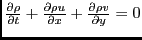
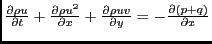
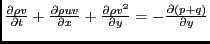
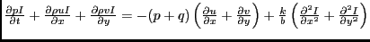
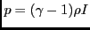
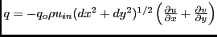
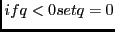
Where
| density | |
| time | |
| x-component of velocity | |
| y-component of velocity | |
| 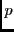 | pressure |
| artificial velocity | |
| standard internal energy | |
| ratio of specific heats | |
| 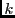 | thermal conductivity |
| specific heat capacity | |
| 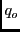 | artificial viscosity coefficient, dimensionless |
| 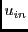 | inflow velocity (representative velocity) |
The variables are:
The following piece of code provides an example of haloing the data in a Field. Currently the Field halo routine assumes the entire halo is updated completely; i.e. the user cannot specify halo width or side separately. Field halo uses a Route object to transfer data from the exclusive domain of one DE to the halo region of another.
call ESMF_FieldHalo(field_rhou, halohandle, rc=status)
if(status .NE. ESMF_SUCCESS) then
print *, "ERROR in FlowRhoVel: rhou halo"
if(present(rc)) rc = status
return
endif
Allocate and deallocate ESMF objects which handle data arrays including ESMF_Fields, ESMF_Grids, and ESMF_Arrays.
The following piece of code provides an example of Field creation used in the demo. In this example we create a Field from an ArraySpec, which designates the rank, type, and kind of the data. First initialize the ArraySpec with rank 2 for a two-dimensional array and kind ESMF_KIND_R4:
call ESMF_ArraySpecSet(arrayspec, rank=2, typekind=ESMF_TYPEKIND_R4, rc=status)
if(status /= ESMF_SUCCESS) call ESMF_Finalize(terminationflag=ESMF_ABORT, rc=status)
field_sie = ESMF_FieldCreate(grid, arrayspec, &
maxHaloLWidth=haloLWidth, maxHaloUWidth=haloUWidth, name="SIE", rc=status)
if(status /= ESMF_SUCCESS) call ESMF_Finalize(terminationflag=ESMF_ABORT, rc=status)
call ESMF_FieldGet(field_sie, farrayPtr=sie, rc=status)
if(status /= ESMF_SUCCESS) call ESMF_Finalize(terminationflag=ESMF_ABORT, rc=status)
The Coupler Component provides two-way coupling between the Injector and FlowSolver Models. During initialization this Component is responsible for setting that data "is needed" from the export state of each model. In its run routine it calls route to transfer the needed data directly from one Component's export state to the other Component's import state.
The following piece of code provides an example of calling the data redistribution routine between two Fields in the Coupler Component. Unlike regrid, which translates between different Grids, redist translates between different DELayouts on the same Grid. The first two lines get the Fields from the States, each corresponding to a different subcomponent. One is an Export State and the other is an Import State.
call ESMF_StateGet(importState, datanames(i), srcfield, rc=rc)
if(rc /= ESMF_SUCCESS) call ESMF_Finalize(terminationflag=ESMF_ABORT, rc=rc)
call ESMF_StateGet(exportState, datanames(i), dstfield, rc=rc)
if(rc /= ESMF_SUCCESS) call ESMF_Finalize(terminationflag=ESMF_ABORT, rc=rc)
call ESMF_FieldRedist(srcfield, dstfield, routehandle, rc=rc)
if(rc /= ESMF_SUCCESS) call ESMF_Finalize(terminationflag=ESMF_ABORT, rc=rc)
This is a user-supplied fluid injection component which interacts with a separate fluid flow model component by altering the inflow boundary conditions during a user-specifed time interval. The energy, velocity, and density of the inflow fluid during the injection time interval are user-specified. The location of the inflow is determined by the fluid flow model component through a set of boundary condition flags which are supplied to this component in the import state. The energy, velocity, and density fields of the calculation are updated by this component and returned to the fluid flow solver for the next computational time step in the export state.
The variables are: